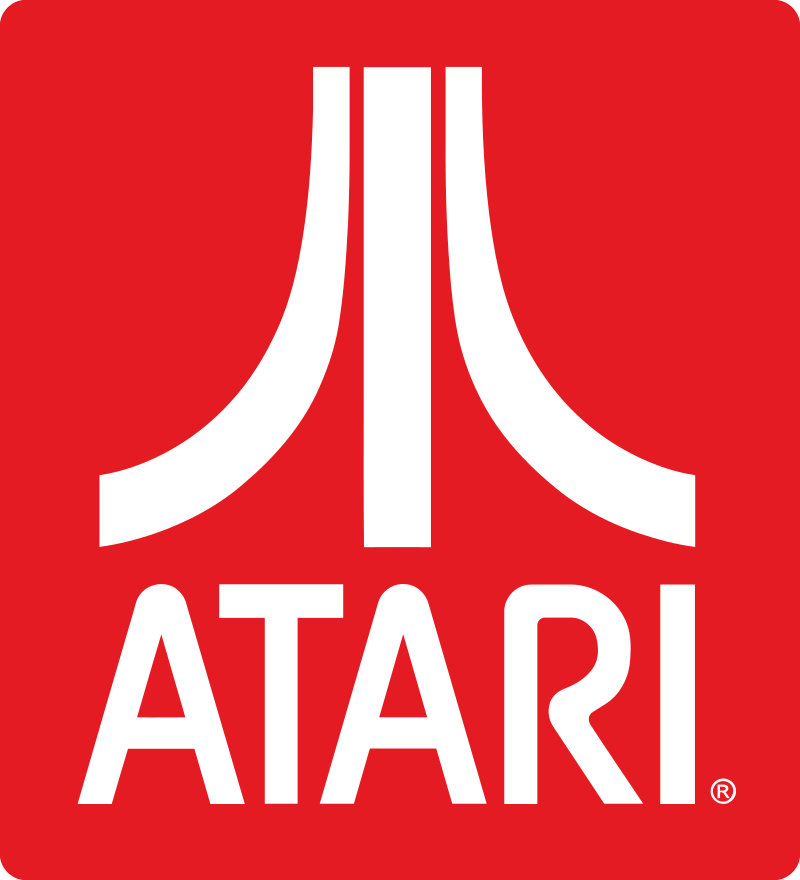

8-bit - это не только единица измерения информации, это еще и уникальное культурное течение, широко распространившееся в 80-е годы и почитаемое до сих пор.
В сфере компьютерной архитектуры 8-бит - это так называемая “шина” или “ширина данных”. Восьмибитные микропроцессоры превалировали на технологическом рынке конца 70-х - начала 80-х;
Легендарный 1972 год. Magnavox представляет первую в мире игровую приставку, открывая ворота консольного гейминга перед людьми.
Спустя полгода Atari выпускает аркадный автомат Pong, который не только, вопреки ожиданиям, имеет ошеломительный коммерческий успех, но и из чернового проекта превращается в важную веху в истории геймдева.

- 
Впервые в 1982 году термин pixel art был использован в корпорации Xerox Адель Голдбертом и Робертом Флегалом. С развитием технологий и появлением изменяемых восьмибитная графика и музыка стали вытесняться из игр и рабочих столов операционных систем, в то время все больше разговоров ходило о том, что восьмибитной графике в скором времени наступит конец.
Появлялись статьи известных людей о том, что смерть pixel art неизбежна и не за горами. Однако прошло совсем немного времени, стала появляться все более совершенная графика, и теперь уже дизайнеры намеренно начали использовать пиксельные рисунки как специальный эффект, а музыканты также продолжать писать 8-bit треки.
В данный момент pixel art в большинстве своем используется не как необходимость (как было раньше, когда только появилось это понятие) а как своеобразная модная фишка и направление в искусстве.
Таким образом, можно сделать вывод, что никакие технологии не смогут уничтожить pixel art – если даже и перестанут существовать устройства, нуждающиеся в пиксельной графике, то останутся как минимум направление в искусстве, стильные изображения для рекламы и многое другое – для хорошего рисунка применение всегда найдется.